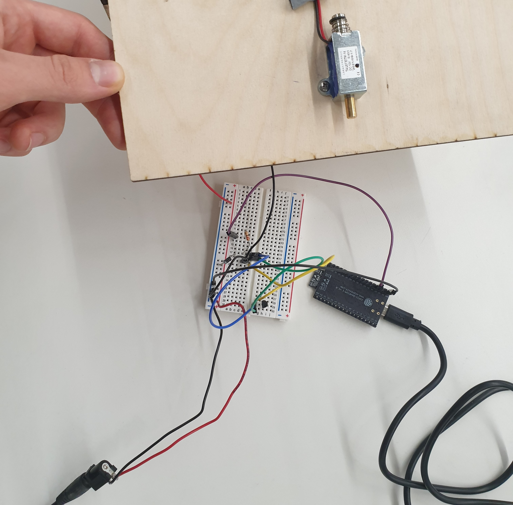

#This week’s assignment
This week, we were tasked with creating a mechanism using two [ESP-32](https://www.adafruit.com/product/3591?gclid=Cj0KCQjwqoibBhDUARIsAH2OpWgumohwKVSZXmiLFgMA1RENApiQtwc6qnYmpRh_0sZC3d3VBoFfpNcaAowzEALw_wcB) boards that would communicate information either through wi-fi, bluetooth or radio. This week, we all paired up, and I made a team with [Layla](https://layla-j-s.github.io/PS70/index.html). As we began talking, we started thinking about a wireless security system that would only unlock a wooden safe only if the right pattern of three buttons are pressed. While the practicality of the system is questionable, we wanted to give it a shot.
##Planning
Firstly, we knew we had to find a way to wirelessly communicate between the buttons and the safe, and we decided to use radio waves. The reason behind this choice was because we didn’t want to restrain the device to a local area network or to the rather impractical bluetooth technology. However, when we stumbled upon a functionality of the ESP-32 named [ESP-NOW](https://randomnerdtutorials.com/esp-now-esp32-arduino-ide/) which allows two boards to communicate with each other using radio waves, we found it to be most fit for our project. We knew we wanted to send a simple boolean across the two boards that would indicate whether the solenoid would need to lock or unlock the safe.
We then thought more specifically about the sender, and how the button pattern would function. I was the one that mostly took care of this side, and had the task of programming the “PIN”. Whenever the user got the right password, the solenoid would either close or open (depending on its previous state). I decided that including an RGB light would be essential in signaling the user whenever he pressed a button, got the pattern correct or wrong - so I knew I had to include it as well. On the receiving end of the signal, Layla would process the boolean received and open or close the solenoid. She would also design the actual box of the safe.
##Wiring
###Wiring the buttons
When it came to wiring the buttons, I was initially confident that I would be able to do it on the ESP-32 as I have done it before on the arduino uno. However, after a couple minutes of confusion, I looked up online [how to wire buttons with ESP-32’s internal PULLUP resistors](https://esp32io.com/tutorials/esp32-button), and was then able to wire three buttons in that way (and kept in mind that in the code, I would have to assign the pullup function to the pins used). I then used three other pins to power the RGB LED on the breadboard, and found great help in [this tutorial](https://esp32io.com/tutorials/esp32-rgb-led).
<div class="two-image-row">
<img src="./Images_Week_9/Buttons_internal_pullup_diagram.jpg" class="half-width-image"/>
<img src="./Images_Week_9/RGB_LED_diagram wiring.jpg" class="half-width-image"/>
</div>
This was the final wiring - it looks pretty messy but works!
<div class = "flex-center-full-size">
</div>
###Wiring the 5V solenoid lock
The wiring of the solenoid turned out to be more challenging than we initially expected. Layla was responsible for this wiring which included a lot of elements we have not implemented before. However, we found [this tutorial](https://core-electronics.com.au/guides/solenoid-control-with-arduino/#:~:text=A%20Solenoid%20is%20a%20coil,a%20number%20of%20interesting%20applications.) which guided her. We also received some help from Kassia, as this was mostly new territory for us. Below, you can see the wiring scheme and our final wired breadboard.
<div class="two-image-row">

</div>
##Coding
Coding was definitely challenging, and we encountered a lot of bugs. However, after a couple iterations we were able to get both the receiver and sender code working properly.
###The sender code
I will speak mostly on this code as this was what I worked on most. Most of the statements that relate to the actual communication of the information was adapted from [RandomNerd’s ESP-NOW tutorial - the sender code portion](https://randomnerdtutorials.com/esp-now-esp32-arduino-ide/). This is the second iteration of the code, as the first one - which included a lot of “if statements” - was not well thought out and was not working properly. In this version, the code utilizes an array that stores the order of the buttons pressed - after which the RGB LED turners blue for half a second. After some of the three buttons are pressed three times, the RGB LED lights up red if wrong and green if right. Whenever the code is correct, a signal is sent to the receiver to either open or close the solenoid (depending on its previous state). Below I imported all the code where I placed comments to explain it further.
<pre>
<font color="#5e6d03">#include</font> <font color="#434f54">&lt;</font><font color="#000000">esp_now</font><font color="#434f54">.</font><font color="#000000">h</font><font color="#434f54">&gt;</font>
<font color="#5e6d03">#include</font> <font color="#434f54">&lt;</font><b><font color="#d35400">WiFi</font></b><font color="#434f54">.</font><font color="#000000">h</font><font color="#434f54">&gt;</font>
<font color="#434f54">&#47;&#47;Bellow I define the pins I will use for the RGB LED and the Buttons</font>
<font color="#5e6d03">#define</font> <font color="#000000">BUTTON_PIN_1</font> <font color="#000000">21</font> &nbsp;<font color="#434f54">&#47;&#47; GIOP21 pin connected to button</font>
<font color="#5e6d03">#define</font> <font color="#000000">BUTTON_PIN_2</font> <font color="#000000">22</font>
<font color="#5e6d03">#define</font> <font color="#000000">BUTTON_PIN_3</font> <font color="#000000">19</font>
<font color="#5e6d03">#define</font> <font color="#000000">PIN_RED</font> &nbsp;&nbsp;&nbsp;<font color="#000000">18</font> <font color="#434f54">&#47;&#47; GIOP23</font>
<font color="#5e6d03">#define</font> <font color="#000000">PIN_GREEN</font> &nbsp;<font color="#000000">23</font> <font color="#434f54">&#47;&#47; GIOP22</font>
<font color="#5e6d03">#define</font> <font color="#000000">PIN_BLUE</font> &nbsp;&nbsp;<font color="#000000">5</font> <font color="#434f54">&#47;&#47; GIOP21</font>
<font color="#434f54">&#47;&#47; The receiver MAC Address (Layla&#39;s )</font>
<font color="#00979c">uint8_t</font> <font color="#000000">broadcastAddress</font><font color="#000000">[</font><font color="#000000">]</font> <font color="#434f54">=</font> <font color="#000000">{</font><font color="#000000">0xC8</font><font color="#434f54">,</font> <font color="#000000">0xF0</font><font color="#434f54">,</font> <font color="#000000">0x9E</font><font color="#434f54">,</font> <font color="#000000">0x47</font><font color="#434f54">,</font> <font color="#000000">0xE8</font><font color="#434f54">,</font> <font color="#000000">0x54</font><font color="#000000">}</font><font color="#000000">;</font>
<font color="#434f54">&#47;&#47; Structure example to send data</font>
<font color="#434f54">&#47;&#47; Must match the receiver structure</font>
<font color="#00979c">typedef</font> <font color="#00979c">struct</font> <font color="#000000">struct_message</font> <font color="#000000">{</font>
&nbsp;<font color="#00979c">bool</font> <font color="#000000">d</font><font color="#000000">;</font> <font color="#434f54">&#47;&#47;We only needed a boolean to be sent</font>
<font color="#000000">}</font> <font color="#000000">struct_message</font><font color="#000000">;</font>
<font color="#434f54">&#47;&#47; Create a struct_message called myData</font>
<font color="#000000">struct_message</font> <font color="#000000">myData</font><font color="#000000">;</font>
<font color="#000000">esp_now_peer_info_t</font> <font color="#000000">peerInfo</font><font color="#000000">;</font>
<font color="#00979c">int</font> <font color="#000000">Button1</font><font color="#000000">;</font>
<font color="#00979c">int</font> <font color="#000000">Button2</font><font color="#000000">;</font>
<font color="#00979c">int</font> <font color="#000000">Button3</font><font color="#000000">;</font>
<font color="#434f54">&#47;&#47; I initiate the &#34;last&#34; and &#34;current&#34; states of the three buttons, with the last always being LOW at the beggining of the program</font>
<font color="#00979c">int</font> <font color="#000000">lastState1</font> <font color="#434f54">=</font> <font color="#00979c">LOW</font><font color="#000000">;</font>
<font color="#00979c">int</font> <font color="#000000">lastState2</font> <font color="#434f54">=</font> <font color="#00979c">LOW</font><font color="#000000">;</font>
<font color="#00979c">int</font> <font color="#000000">lastState3</font> <font color="#434f54">=</font> <font color="#00979c">LOW</font><font color="#000000">;</font>
<font color="#00979c">int</font> <font color="#000000">currentState1</font><font color="#000000">;</font>
<font color="#00979c">int</font> <font color="#000000">currentState2</font><font color="#000000">;</font>
<font color="#00979c">int</font> <font color="#000000">currentState3</font><font color="#000000">;</font>
<font color="#434f54">&#47;&#47; The arrays are initialised here</font>
<font color="#00979c">int</font> <font color="#000000">order</font><font color="#000000">[</font><font color="#000000">]</font> <font color="#434f54">=</font> <font color="#000000">{</font><font color="#000000">0</font><font color="#434f54">,</font> <font color="#000000">0</font><font color="#434f54">,</font> <font color="#000000">0</font><font color="#000000">}</font><font color="#000000">;</font> <font color="#434f54">&#47;&#47;This array is initialised with zeroes but will contain the current combination of buttons</font>
<font color="#00979c">int</font> <font color="#000000">right_order</font><font color="#000000">[</font><font color="#000000">]</font> <font color="#434f54">=</font> <font color="#000000">{</font><font color="#000000">2</font><font color="#434f54">,</font><font color="#000000">3</font><font color="#434f54">,</font><font color="#000000">1</font><font color="#000000">}</font><font color="#000000">;</font> <font color="#434f54">&#47;&#47;This array contains the right combination</font>
<font color="#00979c">int</font> <font color="#000000">place</font> <font color="#434f54">=</font> <font color="#000000">0</font><font color="#000000">;</font> <font color="#434f54">&#47;&#47;This is an index&#47;counter that is incemented whenever a button is pressed</font>
<font color="#00979c">int</font> <font color="#000000">LorU</font> <font color="#434f54">=</font> <font color="#000000">0</font><font color="#000000">;</font> <font color="#434f54">&#47;&#47;This is a variable that stores whether the previous state of the solenoid was LOW or HIGH</font>
<font color="#00979c">void</font> <font color="#000000">OnDataSent</font><font color="#000000">(</font><font color="#00979c">const</font> <font color="#00979c">uint8_t</font> <font color="#434f54">*</font><font color="#000000">mac_addr</font><font color="#434f54">,</font> <font color="#000000">esp_now_send_status_t</font> <font color="#d35400">status</font><font color="#000000">)</font> <font color="#000000">{</font>
&nbsp;<font color="#434f54">&#47;&#47;Transmission initiation code</font>
&nbsp;<b><font color="#d35400">Serial</font></b><font color="#434f54">.</font><font color="#d35400">print</font><font color="#000000">(</font><font color="#005c5f">&#34;\r\nLast Packet Send Status:\t&#34;</font><font color="#000000">)</font><font color="#000000">;</font>
&nbsp;<b><font color="#d35400">Serial</font></b><font color="#434f54">.</font><font color="#d35400">println</font><font color="#000000">(</font><font color="#d35400">status</font> <font color="#434f54">==</font> <font color="#000000">ESP_NOW_SEND_SUCCESS</font> <font color="#434f54">?</font> <font color="#005c5f">&#34;Delivery Success&#34;</font> <font color="#434f54">:</font> <font color="#005c5f">&#34;Delivery Fail&#34;</font><font color="#000000">)</font><font color="#000000">;</font>
<font color="#000000">}</font>
<font color="#00979c">void</font> <font color="#5e6d03">setup</font><font color="#000000">(</font><font color="#000000">)</font> <font color="#000000">{</font>
&nbsp;<font color="#434f54">&#47;&#47; initialize serial communication at 115200 bits per second:</font>
&nbsp;<b><font color="#d35400">Serial</font></b><font color="#434f54">.</font><font color="#d35400">begin</font><font color="#000000">(</font><font color="#000000">115200</font><font color="#000000">)</font><font color="#000000">;</font>
&nbsp;<font color="#434f54">&#47;&#47;I initiate the Button pins as inputs with internal PULLUP resistors</font>
&nbsp;<font color="#d35400">pinMode</font><font color="#000000">(</font><font color="#000000">BUTTON_PIN_1</font><font color="#434f54">,</font> <font color="#00979c">INPUT_PULLUP</font><font color="#000000">)</font><font color="#000000">;</font>
&nbsp;<font color="#d35400">pinMode</font><font color="#000000">(</font><font color="#000000">BUTTON_PIN_2</font><font color="#434f54">,</font> <font color="#00979c">INPUT_PULLUP</font><font color="#000000">)</font><font color="#000000">;</font>
&nbsp;<font color="#d35400">pinMode</font><font color="#000000">(</font><font color="#000000">BUTTON_PIN_3</font><font color="#434f54">,</font> <font color="#00979c">INPUT_PULLUP</font><font color="#000000">)</font><font color="#000000">;</font>
&nbsp;<font color="#434f54">&#47;&#47;I initialise the RGB pins as outputs</font>
&nbsp;<font color="#d35400">pinMode</font><font color="#000000">(</font><font color="#000000">PIN_RED</font><font color="#434f54">,</font> <font color="#00979c">OUTPUT</font><font color="#000000">)</font><font color="#000000">;</font>
&nbsp;<font color="#d35400">pinMode</font><font color="#000000">(</font><font color="#000000">PIN_GREEN</font><font color="#434f54">,</font> <font color="#00979c">OUTPUT</font><font color="#000000">)</font><font color="#000000">;</font>
&nbsp;<font color="#d35400">pinMode</font><font color="#000000">(</font><font color="#000000">PIN_BLUE</font><font color="#434f54">,</font> <font color="#00979c">OUTPUT</font><font color="#000000">)</font><font color="#000000">;</font>
&nbsp;<font color="#434f54">&#47;&#47; Set device as a Wi-Fi Station</font>
&nbsp;<b><font color="#d35400">WiFi</font></b><font color="#434f54">.</font><font color="#d35400">mode</font><font color="#000000">(</font><font color="#00979c">WIFI_STA</font><font color="#000000">)</font><font color="#000000">;</font>
&nbsp;<font color="#434f54">&#47;&#47; Init ESP-NOW</font>
&nbsp;<font color="#5e6d03">if</font> <font color="#000000">(</font><font color="#000000">esp_now_init</font><font color="#000000">(</font><font color="#000000">)</font> <font color="#434f54">!=</font> <font color="#000000">ESP_OK</font><font color="#000000">)</font> <font color="#000000">{</font>
&nbsp;&nbsp;&nbsp;<b><font color="#d35400">Serial</font></b><font color="#434f54">.</font><font color="#d35400">println</font><font color="#000000">(</font><font color="#005c5f">&#34;Error initializing ESP-NOW&#34;</font><font color="#000000">)</font><font color="#000000">;</font>
&nbsp;&nbsp;&nbsp;<font color="#5e6d03">return</font><font color="#000000">;</font>
&nbsp;<font color="#000000">}</font>
&nbsp;<font color="#434f54">&#47;&#47; Once ESPNow is successfully Init, we will register for Send CB to</font>
&nbsp;<font color="#434f54">&#47;&#47; get the status of Trasnmitted packet</font>
&nbsp;<font color="#000000">esp_now_register_send_cb</font><font color="#000000">(</font><font color="#000000">OnDataSent</font><font color="#000000">)</font><font color="#000000">;</font>
&nbsp;<font color="#434f54">&#47;&#47; Register peer</font>
&nbsp;<font color="#d35400">memcpy</font><font color="#000000">(</font><font color="#000000">peerInfo</font><font color="#434f54">.</font><font color="#000000">peer_addr</font><font color="#434f54">,</font> <font color="#000000">broadcastAddress</font><font color="#434f54">,</font> <font color="#000000">6</font><font color="#000000">)</font><font color="#000000">;</font>
&nbsp;<font color="#000000">peerInfo</font><font color="#434f54">.</font><font color="#000000">channel</font> <font color="#434f54">=</font> <font color="#000000">0</font><font color="#000000">;</font> &nbsp;
&nbsp;<font color="#000000">peerInfo</font><font color="#434f54">.</font><font color="#000000">encrypt</font> <font color="#434f54">=</font> <font color="#00979c">false</font><font color="#000000">;</font>
&nbsp;<font color="#434f54">&#47;&#47; Add peer &nbsp;&nbsp;&nbsp;&nbsp;&nbsp;&nbsp;&nbsp;</font>
&nbsp;<font color="#5e6d03">if</font> <font color="#000000">(</font><font color="#000000">esp_now_add_peer</font><font color="#000000">(</font><font color="#434f54">&amp;</font><font color="#000000">peerInfo</font><font color="#000000">)</font> <font color="#434f54">!=</font> <font color="#000000">ESP_OK</font><font color="#000000">)</font><font color="#000000">{</font>
&nbsp;&nbsp;&nbsp;<b><font color="#d35400">Serial</font></b><font color="#434f54">.</font><font color="#d35400">println</font><font color="#000000">(</font><font color="#005c5f">&#34;Failed to add peer&#34;</font><font color="#000000">)</font><font color="#000000">;</font>
&nbsp;&nbsp;&nbsp;<font color="#5e6d03">return</font><font color="#000000">;</font>
<font color="#000000">}</font>
<font color="#000000">}</font>
<font color="#00979c">void</font> <font color="#5e6d03">loop</font><font color="#000000">(</font><font color="#000000">)</font> <font color="#000000">{</font>
&nbsp;<font color="#434f54">&#47;&#47; read the state of all the buttons</font>
&nbsp;<font color="#000000">currentState1</font> <font color="#434f54">=</font> <font color="#d35400">digitalRead</font><font color="#000000">(</font><font color="#000000">BUTTON_PIN_1</font><font color="#000000">)</font><font color="#000000">;</font>
&nbsp;<font color="#000000">currentState2</font> <font color="#434f54">=</font> <font color="#d35400">digitalRead</font><font color="#000000">(</font><font color="#000000">BUTTON_PIN_2</font><font color="#000000">)</font><font color="#000000">;</font>
&nbsp;<font color="#000000">currentState3</font> <font color="#434f54">=</font> <font color="#d35400">digitalRead</font><font color="#000000">(</font><font color="#000000">BUTTON_PIN_3</font><font color="#000000">)</font><font color="#000000">;</font>
&nbsp;<font color="#434f54">&#47;&#47;The if statement only acts when the button is released, not pressed - specifically for button 1</font>
&nbsp;<font color="#5e6d03">if</font><font color="#000000">(</font><font color="#000000">lastState1</font> <font color="#434f54">==</font> <font color="#00979c">HIGH</font> <font color="#434f54">&amp;&amp;</font> <font color="#000000">currentState1</font> <font color="#434f54">==</font> <font color="#00979c">LOW</font><font color="#000000">)</font><font color="#000000">{</font>
&nbsp;&nbsp;&nbsp;<b><font color="#d35400">Serial</font></b><font color="#434f54">.</font><font color="#d35400">println</font><font color="#000000">(</font><font color="#005c5f">&#34;The button 1 was pressed&#34;</font><font color="#000000">)</font><font color="#000000">;</font> <font color="#434f54">&#47;&#47;For debugging - I print the button that was pressed</font>
&nbsp;&nbsp;&nbsp;<font color="#434f54">&#47;&#47;RGB LED goes blue because a button was pressed</font>
&nbsp;&nbsp;&nbsp;<font color="#d35400">analogWrite</font><font color="#000000">(</font><font color="#000000">PIN_RED</font><font color="#434f54">,</font> <font color="#000000">0</font><font color="#000000">)</font><font color="#000000">;</font>
&nbsp;&nbsp;&nbsp;<font color="#d35400">analogWrite</font><font color="#000000">(</font><font color="#000000">PIN_GREEN</font><font color="#434f54">,</font> <font color="#000000">0</font><font color="#000000">)</font><font color="#000000">;</font>
&nbsp;&nbsp;&nbsp;<font color="#d35400">analogWrite</font><font color="#000000">(</font><font color="#000000">PIN_BLUE</font><font color="#434f54">,</font> &nbsp;<font color="#000000">255</font><font color="#000000">)</font><font color="#000000">;</font>
&nbsp;&nbsp;&nbsp;<font color="#d35400">delay</font><font color="#000000">(</font><font color="#000000">500</font><font color="#000000">)</font><font color="#000000">;</font> <font color="#434f54">&#47;&#47;The LED stays blue for half a second</font>
&nbsp;&nbsp;&nbsp;<font color="#d35400">analogWrite</font><font color="#000000">(</font><font color="#000000">PIN_BLUE</font><font color="#434f54">,</font> &nbsp;<font color="#000000">0</font><font color="#000000">)</font><font color="#000000">;</font> <font color="#434f54">&#47;&#47;Then it stops</font>
&nbsp;&nbsp;&nbsp;<font color="#000000">order</font><font color="#000000">[</font><font color="#000000">place</font><font color="#000000">]</font> <font color="#434f54">=</font> <font color="#000000">1</font><font color="#000000">;</font> <font color="#434f54">&#47;&#47;The number of button pressed (1) is stored in the array</font>
&nbsp;&nbsp;&nbsp;<font color="#000000">place</font> <font color="#434f54">=</font> <font color="#000000">place</font> <font color="#434f54">+</font> <font color="#000000">1</font><font color="#000000">;</font> <font color="#434f54">&#47;&#47;The &#34;place&#34; counter is incremented, as another button was pressed</font>
&nbsp;<font color="#000000">}</font>
&nbsp;<font color="#5e6d03">else</font> <font color="#5e6d03">if</font><font color="#000000">(</font><font color="#000000">lastState2</font> <font color="#434f54">==</font> <font color="#00979c">HIGH</font> <font color="#434f54">&amp;&amp;</font> <font color="#000000">currentState2</font> <font color="#434f54">==</font> <font color="#00979c">LOW</font><font color="#000000">)</font><font color="#000000">{</font>
&nbsp;&nbsp;&nbsp;<b><font color="#d35400">Serial</font></b><font color="#434f54">.</font><font color="#d35400">println</font><font color="#000000">(</font><font color="#005c5f">&#34;The button 2 was pressed&#34;</font><font color="#000000">)</font><font color="#000000">;</font> <font color="#434f54">&#47;&#47;For debugging - I print the button that was pressed</font>
&nbsp;&nbsp;&nbsp;<font color="#434f54">&#47;&#47;RGB LED goes blue because a button was pressed</font>
&nbsp;&nbsp;&nbsp;<font color="#d35400">analogWrite</font><font color="#000000">(</font><font color="#000000">PIN_RED</font><font color="#434f54">,</font> &nbsp;&nbsp;<font color="#000000">0</font><font color="#000000">)</font><font color="#000000">;</font>
&nbsp;&nbsp;&nbsp;<font color="#d35400">analogWrite</font><font color="#000000">(</font><font color="#000000">PIN_GREEN</font><font color="#434f54">,</font> <font color="#000000">0</font><font color="#000000">)</font><font color="#000000">;</font>
&nbsp;&nbsp;&nbsp;<font color="#d35400">analogWrite</font><font color="#000000">(</font><font color="#000000">PIN_BLUE</font><font color="#434f54">,</font> &nbsp;<font color="#000000">255</font><font color="#000000">)</font><font color="#000000">;</font>
&nbsp;&nbsp;&nbsp;<font color="#d35400">delay</font><font color="#000000">(</font><font color="#000000">500</font><font color="#000000">)</font><font color="#000000">;</font> <font color="#434f54">&#47;&#47;The LED stays blue for half a second</font>
&nbsp;&nbsp;&nbsp;<font color="#d35400">analogWrite</font><font color="#000000">(</font><font color="#000000">PIN_BLUE</font><font color="#434f54">,</font> &nbsp;<font color="#000000">0</font><font color="#000000">)</font><font color="#000000">;</font> <font color="#434f54">&#47;&#47;Then it stops</font>
&nbsp;&nbsp;&nbsp;<font color="#000000">order</font><font color="#000000">[</font><font color="#000000">place</font><font color="#000000">]</font> <font color="#434f54">=</font> <font color="#000000">2</font><font color="#000000">;</font> <font color="#434f54">&#47;&#47;The number of button pressed (2) is stored in the array</font>
&nbsp;&nbsp;&nbsp;<font color="#000000">place</font> <font color="#434f54">=</font> <font color="#000000">place</font> <font color="#434f54">+</font> <font color="#000000">1</font><font color="#000000">;</font> <font color="#434f54">&#47;&#47;The &#34;place&#34; counter is incremented, as another button was pressed</font>
&nbsp;&nbsp;&nbsp;<font color="#000000">}</font>
&nbsp;<font color="#5e6d03">else</font> <font color="#5e6d03">if</font><font color="#000000">(</font><font color="#000000">lastState3</font> <font color="#434f54">==</font> <font color="#00979c">HIGH</font> <font color="#434f54">&amp;&amp;</font> <font color="#000000">currentState3</font> <font color="#434f54">==</font> <font color="#00979c">LOW</font><font color="#000000">)</font><font color="#000000">{</font>
&nbsp;&nbsp;&nbsp;<b><font color="#d35400">Serial</font></b><font color="#434f54">.</font><font color="#d35400">println</font><font color="#000000">(</font><font color="#005c5f">&#34;The button 3 was pressed&#34;</font><font color="#000000">)</font><font color="#000000">;</font> <font color="#434f54">&#47;&#47;For debugging - I print the button that was pressed</font>
&nbsp;&nbsp;&nbsp;<font color="#434f54">&#47;&#47;RGB LED goes blue because a button was pressed</font>
&nbsp;&nbsp;&nbsp;<font color="#d35400">analogWrite</font><font color="#000000">(</font><font color="#000000">PIN_RED</font><font color="#434f54">,</font> &nbsp;&nbsp;<font color="#000000">0</font><font color="#000000">)</font><font color="#000000">;</font>
&nbsp;&nbsp;&nbsp;<font color="#d35400">analogWrite</font><font color="#000000">(</font><font color="#000000">PIN_GREEN</font><font color="#434f54">,</font> <font color="#000000">0</font><font color="#000000">)</font><font color="#000000">;</font>
&nbsp;&nbsp;&nbsp;<font color="#d35400">analogWrite</font><font color="#000000">(</font><font color="#000000">PIN_BLUE</font><font color="#434f54">,</font> &nbsp;<font color="#000000">255</font><font color="#000000">)</font><font color="#000000">;</font>
&nbsp;&nbsp;&nbsp;<font color="#d35400">delay</font><font color="#000000">(</font><font color="#000000">500</font><font color="#000000">)</font><font color="#000000">;</font> <font color="#434f54">&#47;&#47;The LED stays blue for half a second</font>
&nbsp;&nbsp;&nbsp;<font color="#d35400">analogWrite</font><font color="#000000">(</font><font color="#000000">PIN_BLUE</font><font color="#434f54">,</font> &nbsp;<font color="#000000">0</font><font color="#000000">)</font><font color="#000000">;</font> <font color="#434f54">&#47;&#47;Then it stops</font>
&nbsp;&nbsp;&nbsp;<font color="#000000">order</font><font color="#000000">[</font><font color="#000000">place</font><font color="#000000">]</font> <font color="#434f54">=</font> <font color="#000000">3</font><font color="#000000">;</font> <font color="#434f54">&#47;&#47;The number of button pressed (3) is stored in the array</font>
&nbsp;&nbsp;&nbsp;<font color="#000000">place</font> <font color="#434f54">=</font> <font color="#000000">place</font> <font color="#434f54">+</font> <font color="#000000">1</font><font color="#000000">;</font> <font color="#434f54">&#47;&#47;The &#34;place&#34; counter is incremented, as another button was pressed</font>
&nbsp;&nbsp;&nbsp;<font color="#000000">}</font>
&nbsp;
&nbsp;<font color="#434f54">&#47;&#47; As this is a loop and the next iteration is about to start, the last state of the button assigned the value of the current one for all three buttons</font>
&nbsp;<font color="#000000">lastState1</font> <font color="#434f54">=</font> <font color="#000000">currentState1</font><font color="#000000">;</font>
&nbsp;<font color="#000000">lastState2</font> <font color="#434f54">=</font> <font color="#000000">currentState2</font><font color="#000000">;</font>
&nbsp;<font color="#000000">lastState3</font> <font color="#434f54">=</font> <font color="#000000">currentState3</font><font color="#000000">;</font>
&nbsp;<font color="#434f54">&#47;&#47; When the counter &#34;place&#34; is equal to three, three buttons were pressed already, which means we can check wheather the order is correct</font>
&nbsp;<font color="#5e6d03">if</font> <font color="#000000">(</font><font color="#000000">place</font> <font color="#434f54">==</font> <font color="#000000">3</font><font color="#000000">)</font><font color="#000000">{</font>
&nbsp;&nbsp;&nbsp;<font color="#434f54">&#47;&#47;We check if all elements of the current array match those of the correct array</font>
&nbsp;&nbsp;&nbsp;<font color="#5e6d03">if</font> <font color="#000000">(</font><font color="#000000">order</font><font color="#000000">[</font><font color="#000000">0</font><font color="#000000">]</font> <font color="#434f54">==</font> <font color="#000000">right_order</font><font color="#000000">[</font><font color="#000000">0</font><font color="#000000">]</font> <font color="#434f54">&amp;&amp;</font> <font color="#000000">order</font><font color="#000000">[</font><font color="#000000">1</font><font color="#000000">]</font> <font color="#434f54">==</font> <font color="#000000">right_order</font><font color="#000000">[</font><font color="#000000">1</font><font color="#000000">]</font> <font color="#434f54">&amp;&amp;</font> <font color="#000000">order</font><font color="#000000">[</font><font color="#000000">2</font><font color="#000000">]</font> <font color="#434f54">==</font> <font color="#000000">right_order</font><font color="#000000">[</font><font color="#000000">2</font><font color="#000000">]</font><font color="#000000">)</font><font color="#000000">{</font> <font color="#434f54">&#47;&#47;If it&#39;s correct</font>
&nbsp;&nbsp;&nbsp;&nbsp;&nbsp;<b><font color="#d35400">Serial</font></b><font color="#434f54">.</font><font color="#d35400">println</font><font color="#000000">(</font><font color="#005c5f">&#34;Correct combination!&#34;</font><font color="#000000">)</font><font color="#000000">;</font> <font color="#434f54">&#47;&#47; We print that the combination was correct (for debugging purposes)</font>
&nbsp;&nbsp;&nbsp;&nbsp;&nbsp;<font color="#434f54">&#47;&#47;We make the RGB LED green for half a second</font>
&nbsp;&nbsp;&nbsp;&nbsp;&nbsp;<font color="#d35400">analogWrite</font><font color="#000000">(</font><font color="#000000">PIN_RED</font><font color="#434f54">,</font> &nbsp;&nbsp;<font color="#000000">0</font><font color="#000000">)</font><font color="#000000">;</font>
&nbsp;&nbsp;&nbsp;&nbsp;&nbsp;<font color="#d35400">analogWrite</font><font color="#000000">(</font><font color="#000000">PIN_GREEN</font><font color="#434f54">,</font> <font color="#000000">255</font><font color="#000000">)</font><font color="#000000">;</font>
&nbsp;&nbsp;&nbsp;&nbsp;&nbsp;<font color="#d35400">analogWrite</font><font color="#000000">(</font><font color="#000000">PIN_BLUE</font><font color="#434f54">,</font> &nbsp;<font color="#000000">0</font><font color="#000000">)</font><font color="#000000">;</font>
&nbsp;&nbsp;&nbsp;&nbsp;&nbsp;<font color="#d35400">delay</font><font color="#000000">(</font><font color="#000000">500</font><font color="#000000">)</font><font color="#000000">;</font>
&nbsp;&nbsp;&nbsp;&nbsp;&nbsp;<font color="#d35400">analogWrite</font><font color="#000000">(</font><font color="#000000">PIN_GREEN</font><font color="#434f54">,</font> &nbsp;<font color="#000000">0</font><font color="#000000">)</font><font color="#000000">;</font>
&nbsp;&nbsp;&nbsp;&nbsp;&nbsp;<font color="#000000">LorU</font> <font color="#434f54">=</font> <font color="#000000">LorU</font> <font color="#434f54">+</font> <font color="#000000">1</font><font color="#000000">;</font> <font color="#434f54">&#47;&#47;We increment the variable that counts whenever a signal is sent </font>
&nbsp;&nbsp;&nbsp;&nbsp;&nbsp;<font color="#5e6d03">if</font> <font color="#000000">(</font><font color="#000000">LorU</font> <font color="#434f54">%</font> <font color="#000000">2</font> <font color="#434f54">==</font> <font color="#000000">1</font><font color="#000000">)</font><font color="#000000">{</font> <font color="#434f54">&#47;&#47;If the variable is odd</font>
&nbsp;&nbsp;&nbsp;&nbsp;&nbsp;<font color="#000000">myData</font><font color="#434f54">.</font><font color="#000000">d</font> <font color="#434f54">=</font> <font color="#00979c">false</font><font color="#000000">;</font> <font color="#434f54">&#47;&#47; The data we will send will be &#34;false&#34; - which opens the solenoid</font>
&nbsp;&nbsp;&nbsp;&nbsp;&nbsp;<font color="#000000">}</font>
&nbsp;&nbsp;&nbsp;&nbsp;&nbsp;<font color="#5e6d03">else</font><font color="#000000">{</font>
&nbsp;&nbsp;&nbsp;&nbsp;&nbsp;&nbsp;&nbsp;<font color="#000000">myData</font><font color="#434f54">.</font><font color="#000000">d</font> <font color="#434f54">=</font> <font color="#00979c">true</font><font color="#000000">;</font> <font color="#434f54">&#47;&#47; If the variable is even, it sends &#34;true&#34; - which locks the solenoid</font>
&nbsp;&nbsp;&nbsp;&nbsp;&nbsp;&nbsp;&nbsp;<font color="#000000">}</font>
&nbsp;&nbsp;&nbsp;&nbsp;&nbsp;<font color="#434f54">&#47;&#47; Send the boolean via ESP-NOW</font>
&nbsp;&nbsp;&nbsp;&nbsp;&nbsp;<font color="#000000">esp_err_t</font> <font color="#000000">result</font> <font color="#434f54">=</font> <font color="#000000">esp_now_send</font><font color="#000000">(</font><font color="#000000">broadcastAddress</font><font color="#434f54">,</font> <font color="#000000">(</font><font color="#00979c">uint8_t</font> <font color="#434f54">*</font><font color="#000000">)</font> <font color="#434f54">&amp;</font><font color="#000000">myData</font><font color="#434f54">,</font> <font color="#00979c">sizeof</font><font color="#000000">(</font><font color="#000000">myData</font><font color="#000000">)</font><font color="#000000">)</font><font color="#000000">;</font>
&nbsp;&nbsp;&nbsp;&nbsp;&nbsp;<font color="#434f54">&#47;&#47;I then re-initiate the array - &#34;empty&#34; out all elements of the array</font>
&nbsp;&nbsp;&nbsp;&nbsp;&nbsp;<font color="#000000">order</font><font color="#000000">[</font><font color="#000000">0</font><font color="#000000">]</font> <font color="#434f54">=</font> <font color="#000000">0</font><font color="#000000">;</font>
&nbsp;&nbsp;&nbsp;&nbsp;&nbsp;<font color="#000000">order</font><font color="#000000">[</font><font color="#000000">1</font><font color="#000000">]</font> <font color="#434f54">=</font> <font color="#000000">0</font><font color="#000000">;</font>
&nbsp;&nbsp;&nbsp;&nbsp;&nbsp;<font color="#000000">order</font><font color="#000000">[</font><font color="#000000">2</font><font color="#000000">]</font> <font color="#434f54">=</font> <font color="#000000">0</font><font color="#000000">;</font>
&nbsp;&nbsp;&nbsp;&nbsp;&nbsp;<font color="#000000">place</font> <font color="#434f54">=</font> <font color="#000000">0</font><font color="#000000">;</font> <font color="#434f54">&#47;&#47; The index&#47;counter &#34;place&#34; is back at the beggining</font>
&nbsp;&nbsp;&nbsp;&nbsp;&nbsp;
&nbsp;&nbsp;&nbsp;&nbsp;&nbsp;<font color="#000000">}</font>
&nbsp;&nbsp;&nbsp;&nbsp;<font color="#5e6d03">else</font><font color="#000000">{</font> <font color="#434f54">&#47;&#47;If the combination is not correct</font>
&nbsp;&nbsp;&nbsp;&nbsp;&nbsp;<font color="#434f54">&#47;&#47; We print that the combination was incorrect (for debugging purposes)</font>
&nbsp;&nbsp;&nbsp;&nbsp;&nbsp;<b><font color="#d35400">Serial</font></b><font color="#434f54">.</font><font color="#d35400">println</font><font color="#000000">(</font><font color="#005c5f">&#34;Failed combination!&#34;</font><font color="#000000">)</font><font color="#000000">;</font>
&nbsp;&nbsp;&nbsp;&nbsp;&nbsp;<font color="#434f54">&#47;&#47;We then make the RGB LED Red for half a second</font>
&nbsp;&nbsp;&nbsp;&nbsp;&nbsp;<font color="#d35400">analogWrite</font><font color="#000000">(</font><font color="#000000">PIN_RED</font><font color="#434f54">,</font> &nbsp;&nbsp;<font color="#000000">255</font><font color="#000000">)</font><font color="#000000">;</font>
&nbsp;&nbsp;&nbsp;&nbsp;&nbsp;<font color="#d35400">analogWrite</font><font color="#000000">(</font><font color="#000000">PIN_GREEN</font><font color="#434f54">,</font> <font color="#000000">0</font><font color="#000000">)</font><font color="#000000">;</font>
&nbsp;&nbsp;&nbsp;&nbsp;&nbsp;<font color="#d35400">analogWrite</font><font color="#000000">(</font><font color="#000000">PIN_BLUE</font><font color="#434f54">,</font> &nbsp;<font color="#000000">0</font><font color="#000000">)</font><font color="#000000">;</font>
&nbsp;&nbsp;&nbsp;&nbsp;&nbsp;<font color="#d35400">delay</font><font color="#000000">(</font><font color="#000000">500</font><font color="#000000">)</font><font color="#000000">;</font>
&nbsp;&nbsp;&nbsp;&nbsp;&nbsp;<font color="#d35400">analogWrite</font><font color="#000000">(</font><font color="#000000">PIN_RED</font><font color="#434f54">,</font> &nbsp;<font color="#000000">0</font><font color="#000000">)</font><font color="#000000">;</font>
&nbsp;&nbsp;&nbsp;&nbsp;&nbsp;<font color="#434f54">&#47;&#47;I then re-initiate the array - &#34;empty&#34; out all elements of the array</font>
&nbsp;&nbsp;&nbsp;&nbsp;&nbsp;<font color="#000000">order</font><font color="#000000">[</font><font color="#000000">0</font><font color="#000000">]</font> <font color="#434f54">=</font> <font color="#000000">0</font><font color="#000000">;</font>
&nbsp;&nbsp;&nbsp;&nbsp;&nbsp;<font color="#000000">order</font><font color="#000000">[</font><font color="#000000">1</font><font color="#000000">]</font> <font color="#434f54">=</font> <font color="#000000">0</font><font color="#000000">;</font>
&nbsp;&nbsp;&nbsp;&nbsp;&nbsp;<font color="#000000">order</font><font color="#000000">[</font><font color="#000000">2</font><font color="#000000">]</font> <font color="#434f54">=</font> <font color="#000000">0</font><font color="#000000">;</font>
&nbsp;&nbsp;&nbsp;&nbsp;&nbsp;<font color="#000000">place</font> <font color="#434f54">=</font> <font color="#000000">0</font><font color="#000000">;</font> <font color="#434f54">&#47;&#47; The index&#47;counter &#34;place&#34; is back at the beggining</font>
&nbsp;&nbsp;&nbsp;&nbsp;&nbsp;<font color="#000000">}</font>
&nbsp;&nbsp;&nbsp;<font color="#000000">}</font>
&nbsp;<font color="#000000">}</font>
</pre>
Bellow, I placed a gif of two button pattern tested, one that is correct and one that is incorrect.
<div class = "flex-center-full-size">
<img src="./Images_Week_9/Button_sequence.gif">
</div>
###The receiver code
The receiver code was done by Layla, and was mostly an adaptation of the code from [RandomNerd’s ESP-NOW tutorial - the receiver code section](https://randomnerdtutorials.com/esp-now-esp32-arduino-ide/). After running a different program to get the MAC address of her ESP-32 board, she wrote this code to open or close the solenoid depending on the signal received.
<pre>
<font color="#5e6d03">#define</font> <font color="#000000">solenoidPin</font> <font color="#000000">27</font>
<font color="#5e6d03">#include</font> <font color="#434f54">&lt;</font><font color="#000000">esp_now</font><font color="#434f54">.</font><font color="#000000">h</font><font color="#434f54">&gt;</font>
<font color="#5e6d03">#include</font> <font color="#434f54">&lt;</font><b><font color="#d35400">WiFi</font></b><font color="#434f54">.</font><font color="#000000">h</font><font color="#434f54">&gt;</font>
<font color="#434f54">&#47;&#47; Structure example to receive data</font>
<font color="#434f54">&#47;&#47; Must match the sender structure</font>
<font color="#00979c">typedef</font> <font color="#00979c">struct</font> <font color="#000000">struct_message</font> <font color="#000000">{</font>
&nbsp;&nbsp;&nbsp;<font color="#00979c">bool</font> <font color="#000000">d</font><font color="#000000">;</font>
<font color="#000000">}</font> <font color="#000000">struct_message</font><font color="#000000">;</font>
<font color="#434f54">&#47;&#47; Create a struct_message called myData</font>
<font color="#000000">struct_message</font> <font color="#000000">myData</font><font color="#000000">;</font>
<font color="#434f54">&#47;&#47; callback function that will be executed when data is received</font>
<font color="#00979c">void</font> <font color="#000000">OnDataRecv</font><font color="#000000">(</font><font color="#00979c">const</font> <font color="#00979c">uint8_t</font> <font color="#434f54">*</font> <font color="#000000">mac</font><font color="#434f54">,</font> <font color="#00979c">const</font> <font color="#00979c">uint8_t</font> <font color="#434f54">*</font><font color="#000000">incomingData</font><font color="#434f54">,</font> <font color="#00979c">int</font> <font color="#000000">len</font><font color="#000000">)</font> <font color="#000000">{</font>
&nbsp;<font color="#d35400">memcpy</font><font color="#000000">(</font><font color="#434f54">&amp;</font><font color="#000000">myData</font><font color="#434f54">,</font> <font color="#000000">incomingData</font><font color="#434f54">,</font> <font color="#00979c">sizeof</font><font color="#000000">(</font><font color="#000000">myData</font><font color="#000000">)</font><font color="#000000">)</font><font color="#000000">;</font>
&nbsp;<b><font color="#d35400">Serial</font></b><font color="#434f54">.</font><font color="#d35400">print</font><font color="#000000">(</font><font color="#005c5f">&#34;Bool: &#34;</font><font color="#000000">)</font><font color="#000000">;</font>
&nbsp;<b><font color="#d35400">Serial</font></b><font color="#434f54">.</font><font color="#d35400">println</font><font color="#000000">(</font><font color="#000000">myData</font><font color="#434f54">.</font><font color="#000000">d</font><font color="#000000">)</font><font color="#000000">;</font>
&nbsp;<b><font color="#d35400">Serial</font></b><font color="#434f54">.</font><font color="#d35400">println</font><font color="#000000">(</font><font color="#000000">)</font><font color="#000000">;</font>
&nbsp;<font color="#5e6d03">if</font> <font color="#000000">(</font><font color="#000000">myData</font><font color="#434f54">.</font><font color="#000000">d</font> <font color="#434f54">==</font> <font color="#000000">1</font><font color="#000000">)</font> <font color="#000000">{</font> <font color="#434f54">&#47;&#47;If the boleean data received is True</font>
&nbsp;<font color="#d35400">digitalWrite</font><font color="#000000">(</font><font color="#000000">solenoidPin</font><font color="#434f54">,</font> <font color="#00979c">HIGH</font><font color="#000000">)</font><font color="#000000">;</font> &nbsp;&nbsp;&nbsp;&nbsp;&nbsp;<font color="#434f54">&#47;&#47;Switch Solenoid ON - which opens it</font>
&nbsp;<font color="#000000">}</font>
&nbsp;<font color="#5e6d03">else</font> <font color="#5e6d03">if</font> <font color="#000000">(</font><font color="#000000">myData</font><font color="#434f54">.</font><font color="#000000">d</font> <font color="#434f54">==</font><font color="#000000">0</font> <font color="#000000">)</font> <font color="#000000">{</font>
&nbsp;<font color="#d35400">digitalWrite</font><font color="#000000">(</font><font color="#000000">solenoidPin</font><font color="#434f54">,</font> <font color="#00979c">LOW</font><font color="#000000">)</font><font color="#000000">;</font> &nbsp;&nbsp;&nbsp;&nbsp;&nbsp;<font color="#434f54">&#47;&#47;Switch Solenoid OFF - which closes it</font>
&nbsp;<font color="#000000">}</font>
<font color="#000000">}</font>
</pre>
Overall, we encountered a lot of bugs and issues along the way, but we were able to debug them all and make a system that works.
##The wooden safe
As our project idea was ambitious, we ran out of time and couldn’t design the seif from scratch. Instead, we looked up online some laser cutting DXF files for a simple, opening box. We came across [this one](https://3axis.co/laser-cut-wooden-box-with-lid-dxf-file/078yez5o/) that we eventually scaled and stretched in Fusion 360 to look as shown below (we also considered the actual thickness of our wood when doing these scales). We then took this DXF file and used the laser cutter to cut the wood. I eventually also quickly designed a handle in LightBurn and its support (which cannot be seen in the second picture below).
<div class="two-image-row">
<img src="./Images_Week_9/DXF_file_of_the_safe.PNG" class="half-width-image"/>
</div>
This is the final assembled box! It is worth mentioning that drilling in the solenoid had to be done with precision, as placing it too far from the adjacent wall would’ve meant that the solenoid would not lock the safe, and placing it too close would’ve meant that the solenoid would never open or close. Below, you can see the final, assembled safe.
<div class = "flex-center-full-size">
</div>
Here is the solenoid in action after two correct patterns are input:
<div class = "flex-center-full-size">
<img src="./Images_Week_9/Selenoid_communication.gif">
</div>
Here is a video of the safe working as intended:
<div class = "flex-center-full-size">
<img src="./Images_Week_9/Safe_communication.gif">
</div>